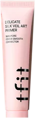
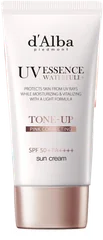
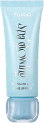
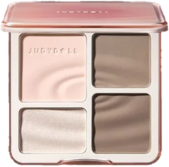
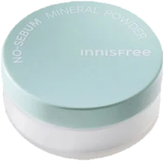

ベース3位

tfit
デリケートシルクヴェールアートプライマー
30mL
¥1,870税込・出典掲載価格
クチコミの要約
- 鼻や頬の毛穴に仕込む
- ピンク色で塗るとなじむ
- 凹凸をぼかしたい日に
気になる声乾燥して合わなかった声も
販売価格・容量・送料はリンク先でご確認ください
THE COSME EDIT / 2026.09.14
動画で紹介した8品です。順位は、ベースメイク・ポイントメイクなど各部門の中での順位です。
08 ITEMS 動画で紹介した商品
もとは美的.comが2026年上半期にドン・キホーテへ取材した部門別TOP3です。アヌアの美容液2品とダルバのミストは前の回で紹介したので外しました。CICAフェイスマスクはドンキのオリジナル商品で楽天に扱いがなく外しています。メディキューブ PDRNピンクセラムとヴァセリン2品は、本数の都合で外しました。
価格は出典掲載時のものです。楽天の現在価格とは異なる場合があります。

tfit
30mL
¥1,870税込・出典掲載価格
クチコミの要約
気になる声乾燥して合わなかった声も
販売価格・容量・送料はリンク先でご確認ください

ミッシュブルーミン
1ペア
¥605税込・出典掲載価格
クチコミの要約
気になる声盛れすぎかもって声も
販売価格・容量・送料はリンク先でご確認ください

d'Alba
35mL
¥2,200税込・出典掲載価格
クチコミの要約
気になる声塗りたてテカるって声も
販売価格・容量・送料はリンク先でご確認ください

fwee
35mL
¥2,310税込・出典掲載価格
クチコミの要約
気になる声香りが気になるって声も
販売価格・容量・送料はリンク先でご確認ください

JUDYDOLL
9g
¥2,090税込・出典掲載価格
クチコミの要約
気になる声薄づきで物足りない人もいる
販売価格・容量・送料はリンク先でご確認ください

ダヴ
298g
¥1,580税込・出典掲載価格
クチコミの要約
気になる声香りが強すぎる人もいる
販売価格・容量・送料はリンク先でご確認ください

innisfree
5g
¥899税込・出典掲載価格
クチコミの要約
気になる声開けると粉が舞うって声も
販売価格・容量・送料はリンク先でご確認ください

メイベリン
8.6mL
¥1,694税込・出典掲載価格
クチコミの要約
気になる声夕方にじむって声も
販売価格・容量・送料はリンク先でご確認ください
SOURCE & NOTES
集計期間：2026年上半期。ドン・キホーテへの取材によるランキングで、売上の順とは書かれていません。
価格と容量は美的.comの記事に載っている税込価格です。